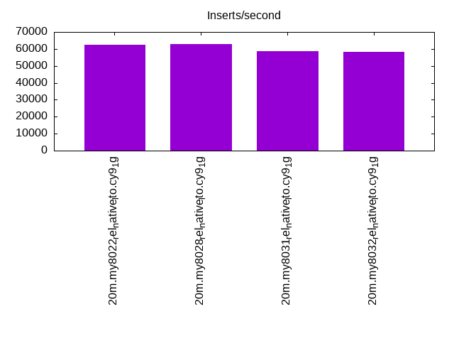
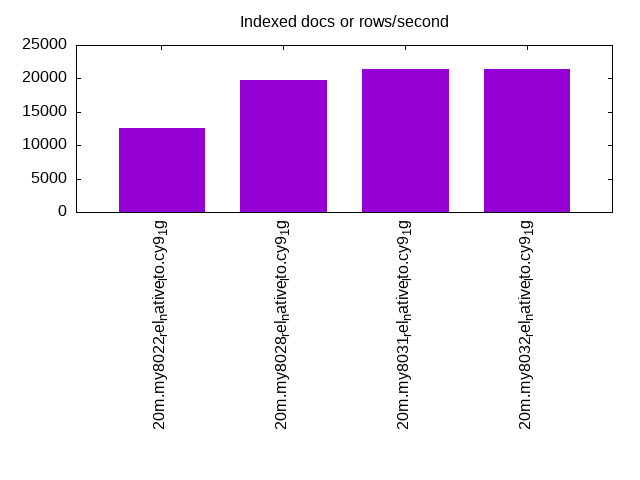
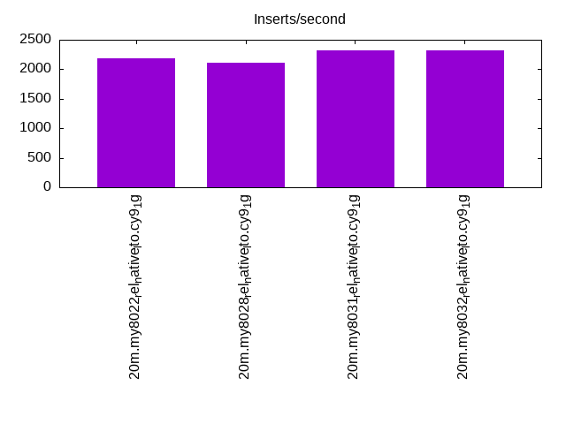
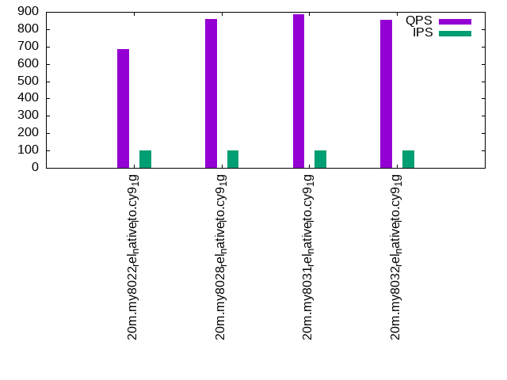
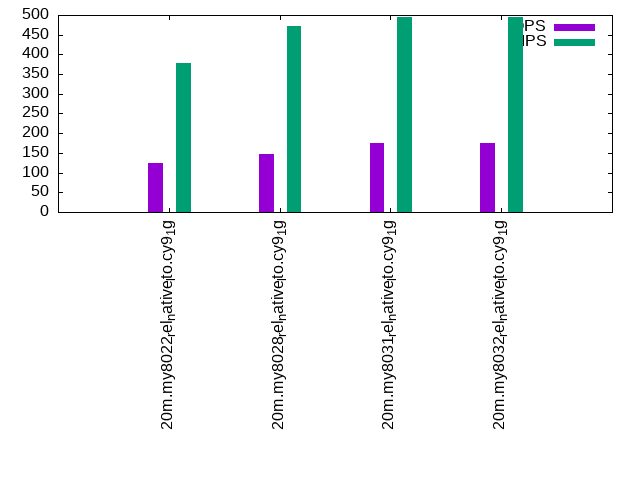
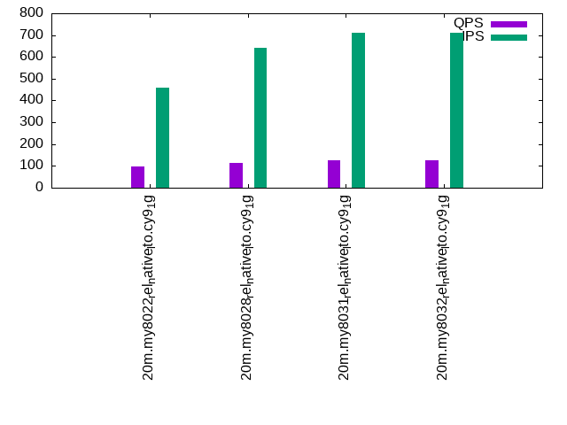

This is a report for the insert benchmark with 20M docs and 1 client(s). It is generated by scripts (bash, awk, sed) and Tufte might not be impressed. An overview of the insert benchmark is here and a short update is here. Below, by DBMS, I mean DBMS+version.config. An example is my8020.c10b40 where my means MySQL, 8020 is version 8.0.20 and c10b40 is the name for the configuration file.
The test server has 8 AMD cores, 16G RAM and an NVMe SSD. It is described here as the Beelink. The benchmark was run with 1 client and there were 1 or 2 connections per client (1 for queries, 1 for inserts). The benchmark loads 20M rows without secondary indexes, creates secondary indexes, loads another 20M rows then does 3 read+write tests for one hour each that do queries as fast as possible with 100, 500 and then 1000 writes/second/client concurrent with the queries. There is 1 table. The database is cached by the OS but not by InnoDB. Clients and the DBMS share one server. The per-database configs are in the per-database subdirectories here.
The tested DBMS are:
The numbers are inserts/s for l.i0 and l.i1, indexed docs (or rows) /s for l.x and queries/s for q*.2. The values are the average rate over the entire test for inserts (IPS) and queries (QPS). The range of values for IPS and QPS is split into 3 parts: bottom 25%, middle 50%, top 25%. Values in the bottom 25% have a red background, values in the top 25% have a green background and values in the middle have no color. A gray background is used for values that can be ignored because the DBMS did not sustain the target insert rate. Red backgrounds are not used when the minimum value is within 80% of the max value.
| dbms | l.i0 | l.x | l.i1 | q100.1 | q500.1 | q1000.1 |
|---|---|---|---|---|---|---|
| 20m.my8022_rel_native_lto.cy9_1g | 62500 | 12539 | 2184 | 684 | 125 | 98 |
| 20m.my8028_rel_native_lto.cy9_1g | 62696 | 19706 | 2111 | 861 | 146 | 114 |
| 20m.my8031_rel_native_lto.cy9_1g | 58480 | 21360 | 2314 | 885 | 174 | 126 |
| 20m.my8032_rel_native_lto.cy9_1g | 58140 | 21360 | 2326 | 854 | 174 | 125 |
This table has relative throughput, throughput for the DBMS relative to the DBMS in the first line, using the absolute throughput from the previous table.
| dbms | l.i0 | l.x | l.i1 | q100.1 | q500.1 | q1000.1 |
|---|---|---|---|---|---|---|
| 20m.my8022_rel_native_lto.cy9_1g | 1.00 | 1.00 | 1.00 | 1.00 | 1.00 | 1.00 |
| 20m.my8028_rel_native_lto.cy9_1g | 1.00 | 1.57 | 0.97 | 1.26 | 1.17 | 1.16 |
| 20m.my8031_rel_native_lto.cy9_1g | 0.94 | 1.70 | 1.06 | 1.29 | 1.39 | 1.29 |
| 20m.my8032_rel_native_lto.cy9_1g | 0.93 | 1.70 | 1.07 | 1.25 | 1.39 | 1.28 |
This lists the average rate of inserts/s for the tests that do inserts concurrent with queries. For such tests the query rate is listed in the table above. The read+write tests are setup so that the insert rate should match the target rate every second. Cells that are not at least 95% of the target have a red background to indicate a failure to satisfy the target.
| dbms | q100.1 | q500.1 | q1000.1 |
|---|---|---|---|
| my8022_rel_native_lto.cy9_1g | 100 | 378 | 457 |
| my8028_rel_native_lto.cy9_1g | 100 | 472 | 640 |
| my8031_rel_native_lto.cy9_1g | 100 | 496 | 709 |
| my8032_rel_native_lto.cy9_1g | 100 | 495 | 711 |
| target | 100 | 500 | 1000 |
l.i0: load without secondary indexes. Graphs for performance per 1-second interval are here.
Average throughput:
Insert response time histogram: each cell has the percentage of responses that take <= the time in the header and max is the max response time in seconds. For the max column values in the top 25% of the range have a red background and in the bottom 25% of the range have a green background. The red background is not used when the min value is within 80% of the max value.
| dbms | 256us | 1ms | 4ms | 16ms | 64ms | 256ms | 1s | 4s | 16s | gt | max |
|---|---|---|---|---|---|---|---|---|---|---|---|
| my8022_rel_native_lto.cy9_1g | 99.564 | 0.243 | 0.178 | 0.015 | 0.104 | ||||||
| my8028_rel_native_lto.cy9_1g | 99.440 | 0.415 | 0.137 | 0.009 | 0.104 | ||||||
| my8031_rel_native_lto.cy9_1g | 99.394 | 0.471 | 0.132 | 0.003 | 0.123 | ||||||
| my8032_rel_native_lto.cy9_1g | 99.379 | 0.450 | 0.169 | 0.002 | 0.127 |
Performance metrics for the DBMS listed above. Some are normalized by throughput, others are not. Legend for results is here.
ips qps rps rmbps wps wmbps rpq rkbpq wpi wkbpi csps cpups cspq cpupq dbgb1 dbgb2 rss maxop p50 p99 tag 62500 0 0 0.0 161.4 18.3 0.000 0.000 0.003 0.299 7011 21.2 0.112 27 1.3 9.9 1.3 0.104 63029 54239 20m.my8022_rel_native_lto.cy9_1g 62696 0 0 0.0 165.0 18.4 0.000 0.000 0.003 0.300 7088 21.5 0.113 27 1.3 9.9 1.3 0.104 63412 53473 20m.my8028_rel_native_lto.cy9_1g 58480 0 0 0.0 172.4 17.8 0.000 0.000 0.003 0.311 6975 21.1 0.119 29 1.3 9.9 1.3 0.123 58933 49444 20m.my8031_rel_native_lto.cy9_1g 58140 0 0 0.0 173.2 17.8 0.000 0.000 0.003 0.313 6964 20.9 0.120 29 1.3 9.9 1.4 0.127 58734 44452 20m.my8032_rel_native_lto.cy9_1g
l.x: create secondary indexes.
Average throughput:
Performance metrics for the DBMS listed above. Some are normalized by throughput, others are not. Legend for results is here.
ips qps rps rmbps wps wmbps rpq rkbpq wpi wkbpi csps cpups cspq cpupq dbgb1 dbgb2 rss maxop p50 p99 tag 12539 0 0 0.0 317.8 11.2 0.000 0.000 0.025 0.914 2385 1.5 0.190 10 3.0 11.5 1.5 0.028 NA NA 20m.my8022_rel_native_lto.cy9_1g 19706 0 102 6.8 543.4 22.2 0.005 0.355 0.028 1.154 4024 6.9 0.204 28 3.0 11.5 1.4 0.018 NA NA 20m.my8028_rel_native_lto.cy9_1g 21360 0 110 7.4 575.6 23.7 0.005 0.354 0.027 1.137 4408 6.8 0.206 25 3.0 11.5 1.5 0.012 NA NA 20m.my8031_rel_native_lto.cy9_1g 21360 0 110 7.4 574.4 23.7 0.005 0.354 0.027 1.137 4396 7.9 0.206 30 3.0 11.5 1.5 0.034 NA NA 20m.my8032_rel_native_lto.cy9_1g
l.i1: continue load after secondary indexes created. Graphs for performance per 1-second interval are here.
Average throughput:
Insert response time histogram: each cell has the percentage of responses that take <= the time in the header and max is the max response time in seconds. For the max column values in the top 25% of the range have a red background and in the bottom 25% of the range have a green background. The red background is not used when the min value is within 80% of the max value.
| dbms | 256us | 1ms | 4ms | 16ms | 64ms | 256ms | 1s | 4s | 16s | gt | max |
|---|---|---|---|---|---|---|---|---|---|---|---|
| my8022_rel_native_lto.cy9_1g | 1.053 | 60.669 | 31.998 | 5.946 | 0.289 | 0.046 | nonzero | 4.122 | |||
| my8028_rel_native_lto.cy9_1g | 0.737 | 58.761 | 32.865 | 7.417 | 0.208 | 0.012 | nonzero | 7.464 | |||
| my8031_rel_native_lto.cy9_1g | 0.472 | 60.394 | 33.578 | 5.409 | 0.122 | 0.025 | 3.057 | ||||
| my8032_rel_native_lto.cy9_1g | 0.567 | 60.553 | 33.355 | 5.378 | 0.123 | 0.025 | 3.897 |
Performance metrics for the DBMS listed above. Some are normalized by throughput, others are not. Legend for results is here.
ips qps rps rmbps wps wmbps rpq rkbpq wpi wkbpi csps cpups cspq cpupq dbgb1 dbgb2 rss maxop p50 p99 tag 2184 0 0 0.0 1063.6 21.4 0.000 0.000 0.487 10.032 5786 6.8 2.650 249 7.7 16.3 1.5 4.122 2347 50 20m.my8022_rel_native_lto.cy9_1g 2111 0 0 0.0 902.1 18.1 0.000 0.000 0.427 8.769 5066 6.9 2.400 262 7.7 16.3 1.5 7.464 2197 50 20m.my8028_rel_native_lto.cy9_1g 2314 0 0 0.0 1039.1 21.2 0.000 0.001 0.449 9.377 5875 8.0 2.539 277 7.7 16.3 1.5 3.057 2447 50 20m.my8031_rel_native_lto.cy9_1g 2326 0 0 0.0 1041.3 21.3 0.000 0.000 0.448 9.360 5887 8.0 2.531 275 7.7 16.3 1.5 3.897 2447 50 20m.my8032_rel_native_lto.cy9_1g
q100.1: range queries with 100 insert/s per client. Graphs for performance per 1-second interval are here.
Average throughput:
Query response time histogram: each cell has the percentage of responses that take <= the time in the header and max is the max response time in seconds. For max values in the top 25% of the range have a red background and in the bottom 25% of the range have a green background. The red background is not used when the min value is within 80% of the max value.
| dbms | 256us | 1ms | 4ms | 16ms | 64ms | 256ms | 1s | 4s | 16s | gt | max |
|---|---|---|---|---|---|---|---|---|---|---|---|
| my8022_rel_native_lto.cy9_1g | 7.094 | 88.051 | 0.446 | 2.188 | 2.006 | 0.214 | 0.001 | 0.387 | |||
| my8028_rel_native_lto.cy9_1g | 6.386 | 89.037 | 0.498 | 2.365 | 1.655 | 0.060 | nonzero | 0.259 | |||
| my8031_rel_native_lto.cy9_1g | 3.380 | 92.025 | 0.601 | 2.418 | 1.531 | 0.046 | nonzero | 0.272 | |||
| my8032_rel_native_lto.cy9_1g | 1.592 | 93.665 | 0.613 | 2.453 | 1.631 | 0.045 | nonzero | 0.271 |
Insert response time histogram: each cell has the percentage of responses that take <= the time in the header and max is the max response time in seconds. For max values in the top 25% of the range have a red background and in the bottom 25% of the range have a green background. The red background is not used when the min value is within 80% of the max value.
| dbms | 256us | 1ms | 4ms | 16ms | 64ms | 256ms | 1s | 4s | 16s | gt | max |
|---|---|---|---|---|---|---|---|---|---|---|---|
| my8022_rel_native_lto.cy9_1g | 0.806 | 30.694 | 12.861 | 33.889 | 21.722 | 0.028 | 1.056 | ||||
| my8028_rel_native_lto.cy9_1g | 1.472 | 43.222 | 11.944 | 34.917 | 8.444 | 0.770 | |||||
| my8031_rel_native_lto.cy9_1g | 0.306 | 45.750 | 12.667 | 34.306 | 6.972 | 0.843 | |||||
| my8032_rel_native_lto.cy9_1g | 0.139 | 45.278 | 12.861 | 35.167 | 6.556 | 0.810 |
Performance metrics for the DBMS listed above. Some are normalized by throughput, others are not. Legend for results is here.
ips qps rps rmbps wps wmbps rpq rkbpq wpi wkbpi csps cpups cspq cpupq dbgb1 dbgb2 rss maxop p50 p99 tag 100 684 1 0.0 633.7 11.9 0.002 0.028 6.349 121.732 6164 6.1 9.016 714 7.9 16.5 1.5 0.387 320 16 20m.my8022_rel_native_lto.cy9_1g 100 861 1 0.0 663.1 12.2 0.001 0.018 6.644 124.774 6903 6.8 8.021 632 7.9 16.5 1.5 0.259 655 32 20m.my8028_rel_native_lto.cy9_1g 100 885 1 0.0 673.4 12.4 0.001 0.016 6.748 126.866 7234 7.3 8.174 660 7.9 16.5 1.5 0.272 640 32 20m.my8031_rel_native_lto.cy9_1g 100 854 1 0.0 670.0 12.3 0.001 0.019 6.713 126.356 7094 7.3 8.309 684 7.9 16.5 1.5 0.271 703 32 20m.my8032_rel_native_lto.cy9_1g
q500.1: range queries with 500 insert/s per client. Graphs for performance per 1-second interval are here.
Average throughput:
Query response time histogram: each cell has the percentage of responses that take <= the time in the header and max is the max response time in seconds. For max values in the top 25% of the range have a red background and in the bottom 25% of the range have a green background. The red background is not used when the min value is within 80% of the max value.
| dbms | 256us | 1ms | 4ms | 16ms | 64ms | 256ms | 1s | 4s | 16s | gt | max |
|---|---|---|---|---|---|---|---|---|---|---|---|
| my8022_rel_native_lto.cy9_1g | 1.220 | 64.081 | 1.046 | 18.085 | 13.885 | 1.682 | 0.001 | 0.315 | |||
| my8028_rel_native_lto.cy9_1g | 1.203 | 62.495 | 2.012 | 19.856 | 13.826 | 0.606 | 0.002 | 0.389 | |||
| my8031_rel_native_lto.cy9_1g | 0.651 | 64.514 | 2.421 | 20.840 | 11.350 | 0.225 | 0.223 | ||||
| my8032_rel_native_lto.cy9_1g | 0.396 | 65.165 | 2.406 | 20.536 | 11.220 | 0.277 | 0.227 |
Insert response time histogram: each cell has the percentage of responses that take <= the time in the header and max is the max response time in seconds. For max values in the top 25% of the range have a red background and in the bottom 25% of the range have a green background. The red background is not used when the min value is within 80% of the max value.
| dbms | 256us | 1ms | 4ms | 16ms | 64ms | 256ms | 1s | 4s | 16s | gt | max |
|---|---|---|---|---|---|---|---|---|---|---|---|
| my8022_rel_native_lto.cy9_1g | 0.328 | 21.294 | 21.061 | 44.983 | 12.333 | 0.759 | |||||
| my8028_rel_native_lto.cy9_1g | 0.483 | 14.783 | 24.261 | 59.306 | 1.167 | 0.606 | |||||
| my8031_rel_native_lto.cy9_1g | 0.044 | 17.817 | 26.950 | 54.989 | 0.200 | 0.592 | |||||
| my8032_rel_native_lto.cy9_1g | 0.067 | 18.406 | 27.517 | 53.617 | 0.394 | 0.487 |
Performance metrics for the DBMS listed above. Some are normalized by throughput, others are not. Legend for results is here.
ips qps rps rmbps wps wmbps rpq rkbpq wpi wkbpi csps cpups cspq cpupq dbgb1 dbgb2 rss maxop p50 p99 tag 378 125 3 0.1 775.8 14.7 0.027 0.464 2.055 39.769 5075 4.1 40.734 2633 8.3 16.9 1.5 0.315 48 16 20m.my8022_rel_native_lto.cy9_1g 472 146 5 0.1 908.8 17.3 0.032 0.546 1.925 37.490 5608 4.7 38.435 2577 8.3 16.9 1.5 0.389 80 32 20m.my8028_rel_native_lto.cy9_1g 496 174 4 0.1 1012.6 19.3 0.024 0.412 2.040 39.820 6383 5.6 36.684 2575 8.3 16.9 1.5 0.223 96 48 20m.my8031_rel_native_lto.cy9_1g 495 174 5 0.1 1012.1 19.3 0.031 0.440 2.045 39.920 6361 5.6 36.665 2582 8.3 16.9 1.5 0.227 96 32 20m.my8032_rel_native_lto.cy9_1g
q1000.1: range queries with 1000 insert/s per client. Graphs for performance per 1-second interval are here.
Average throughput:
Query response time histogram: each cell has the percentage of responses that take <= the time in the header and max is the max response time in seconds. For max values in the top 25% of the range have a red background and in the bottom 25% of the range have a green background. The red background is not used when the min value is within 80% of the max value.
| dbms | 256us | 1ms | 4ms | 16ms | 64ms | 256ms | 1s | 4s | 16s | gt | max |
|---|---|---|---|---|---|---|---|---|---|---|---|
| my8022_rel_native_lto.cy9_1g | 0.454 | 59.080 | 1.901 | 19.243 | 16.540 | 2.780 | 0.003 | 0.373 | |||
| my8028_rel_native_lto.cy9_1g | 0.285 | 55.540 | 3.317 | 21.969 | 17.830 | 1.057 | 0.001 | 0.347 | |||
| my8031_rel_native_lto.cy9_1g | 0.140 | 54.417 | 5.027 | 23.830 | 15.972 | 0.615 | nonzero | 0.279 | |||
| my8032_rel_native_lto.cy9_1g | 0.053 | 54.317 | 5.133 | 23.635 | 16.250 | 0.610 | 0.001 | 0.339 |
Insert response time histogram: each cell has the percentage of responses that take <= the time in the header and max is the max response time in seconds. For max values in the top 25% of the range have a red background and in the bottom 25% of the range have a green background. The red background is not used when the min value is within 80% of the max value.
| dbms | 256us | 1ms | 4ms | 16ms | 64ms | 256ms | 1s | 4s | 16s | gt | max |
|---|---|---|---|---|---|---|---|---|---|---|---|
| my8022_rel_native_lto.cy9_1g | 0.075 | 31.047 | 16.869 | 41.939 | 10.069 | 0.880 | |||||
| my8028_rel_native_lto.cy9_1g | 0.061 | 21.933 | 27.431 | 49.822 | 0.753 | 0.648 | |||||
| my8031_rel_native_lto.cy9_1g | 0.008 | 22.656 | 30.997 | 46.144 | 0.194 | 0.424 | |||||
| my8032_rel_native_lto.cy9_1g | 0.022 | 23.297 | 30.633 | 45.889 | 0.158 | 0.580 |
Performance metrics for the DBMS listed above. Some are normalized by throughput, others are not. Legend for results is here.
ips qps rps rmbps wps wmbps rpq rkbpq wpi wkbpi csps cpups cspq cpupq dbgb1 dbgb2 rss maxop p50 p99 tag 457 98 2 0.0 751.9 14.3 0.018 0.295 1.644 31.924 4878 4.0 49.722 3262 8.8 17.3 1.5 0.373 48 16 20m.my8022_rel_native_lto.cy9_1g 640 114 3 0.0 923.2 17.7 0.024 0.383 1.441 28.232 5551 5.0 48.864 3521 8.8 17.3 1.5 0.347 64 16 20m.my8028_rel_native_lto.cy9_1g 709 126 2 0.0 1024.6 19.7 0.020 0.322 1.444 28.488 6265 5.9 49.642 3740 8.8 17.3 1.5 0.279 80 32 20m.my8031_rel_native_lto.cy9_1g 711 125 3 0.0 1021.2 19.7 0.025 0.367 1.437 28.369 6238 5.8 49.820 3706 8.8 17.3 1.5 0.339 80 32 20m.my8032_rel_native_lto.cy9_1g
l.i0: load without secondary indexes
Performance metrics for all DBMS, not just the ones listed above. Some are normalized by throughput, others are not. Legend for results is here.
ips qps rps rmbps wps wmbps rpq rkbpq wpi wkbpi csps cpups cspq cpupq dbgb1 dbgb2 rss maxop p50 p99 tag 62500 0 0 0.0 161.4 18.3 0.000 0.000 0.003 0.299 7011 21.2 0.112 27 1.3 9.9 1.3 0.104 63029 54239 20m.my8022_rel_native_lto.cy9_1g 62696 0 0 0.0 165.0 18.4 0.000 0.000 0.003 0.300 7088 21.5 0.113 27 1.3 9.9 1.3 0.104 63412 53473 20m.my8028_rel_native_lto.cy9_1g 58480 0 0 0.0 172.4 17.8 0.000 0.000 0.003 0.311 6975 21.1 0.119 29 1.3 9.9 1.3 0.123 58933 49444 20m.my8031_rel_native_lto.cy9_1g 58140 0 0 0.0 173.2 17.8 0.000 0.000 0.003 0.313 6964 20.9 0.120 29 1.3 9.9 1.4 0.127 58734 44452 20m.my8032_rel_native_lto.cy9_1g
l.x: create secondary indexes
Performance metrics for all DBMS, not just the ones listed above. Some are normalized by throughput, others are not. Legend for results is here.
ips qps rps rmbps wps wmbps rpq rkbpq wpi wkbpi csps cpups cspq cpupq dbgb1 dbgb2 rss maxop p50 p99 tag 12539 0 0 0.0 317.8 11.2 0.000 0.000 0.025 0.914 2385 1.5 0.190 10 3.0 11.5 1.5 0.028 NA NA 20m.my8022_rel_native_lto.cy9_1g 19706 0 102 6.8 543.4 22.2 0.005 0.355 0.028 1.154 4024 6.9 0.204 28 3.0 11.5 1.4 0.018 NA NA 20m.my8028_rel_native_lto.cy9_1g 21360 0 110 7.4 575.6 23.7 0.005 0.354 0.027 1.137 4408 6.8 0.206 25 3.0 11.5 1.5 0.012 NA NA 20m.my8031_rel_native_lto.cy9_1g 21360 0 110 7.4 574.4 23.7 0.005 0.354 0.027 1.137 4396 7.9 0.206 30 3.0 11.5 1.5 0.034 NA NA 20m.my8032_rel_native_lto.cy9_1g
l.i1: continue load after secondary indexes created
Performance metrics for all DBMS, not just the ones listed above. Some are normalized by throughput, others are not. Legend for results is here.
ips qps rps rmbps wps wmbps rpq rkbpq wpi wkbpi csps cpups cspq cpupq dbgb1 dbgb2 rss maxop p50 p99 tag 2184 0 0 0.0 1063.6 21.4 0.000 0.000 0.487 10.032 5786 6.8 2.650 249 7.7 16.3 1.5 4.122 2347 50 20m.my8022_rel_native_lto.cy9_1g 2111 0 0 0.0 902.1 18.1 0.000 0.000 0.427 8.769 5066 6.9 2.400 262 7.7 16.3 1.5 7.464 2197 50 20m.my8028_rel_native_lto.cy9_1g 2314 0 0 0.0 1039.1 21.2 0.000 0.001 0.449 9.377 5875 8.0 2.539 277 7.7 16.3 1.5 3.057 2447 50 20m.my8031_rel_native_lto.cy9_1g 2326 0 0 0.0 1041.3 21.3 0.000 0.000 0.448 9.360 5887 8.0 2.531 275 7.7 16.3 1.5 3.897 2447 50 20m.my8032_rel_native_lto.cy9_1g
q100.1: range queries with 100 insert/s per client
Performance metrics for all DBMS, not just the ones listed above. Some are normalized by throughput, others are not. Legend for results is here.
ips qps rps rmbps wps wmbps rpq rkbpq wpi wkbpi csps cpups cspq cpupq dbgb1 dbgb2 rss maxop p50 p99 tag 100 684 1 0.0 633.7 11.9 0.002 0.028 6.349 121.732 6164 6.1 9.016 714 7.9 16.5 1.5 0.387 320 16 20m.my8022_rel_native_lto.cy9_1g 100 861 1 0.0 663.1 12.2 0.001 0.018 6.644 124.774 6903 6.8 8.021 632 7.9 16.5 1.5 0.259 655 32 20m.my8028_rel_native_lto.cy9_1g 100 885 1 0.0 673.4 12.4 0.001 0.016 6.748 126.866 7234 7.3 8.174 660 7.9 16.5 1.5 0.272 640 32 20m.my8031_rel_native_lto.cy9_1g 100 854 1 0.0 670.0 12.3 0.001 0.019 6.713 126.356 7094 7.3 8.309 684 7.9 16.5 1.5 0.271 703 32 20m.my8032_rel_native_lto.cy9_1g
q500.1: range queries with 500 insert/s per client
Performance metrics for all DBMS, not just the ones listed above. Some are normalized by throughput, others are not. Legend for results is here.
ips qps rps rmbps wps wmbps rpq rkbpq wpi wkbpi csps cpups cspq cpupq dbgb1 dbgb2 rss maxop p50 p99 tag 378 125 3 0.1 775.8 14.7 0.027 0.464 2.055 39.769 5075 4.1 40.734 2633 8.3 16.9 1.5 0.315 48 16 20m.my8022_rel_native_lto.cy9_1g 472 146 5 0.1 908.8 17.3 0.032 0.546 1.925 37.490 5608 4.7 38.435 2577 8.3 16.9 1.5 0.389 80 32 20m.my8028_rel_native_lto.cy9_1g 496 174 4 0.1 1012.6 19.3 0.024 0.412 2.040 39.820 6383 5.6 36.684 2575 8.3 16.9 1.5 0.223 96 48 20m.my8031_rel_native_lto.cy9_1g 495 174 5 0.1 1012.1 19.3 0.031 0.440 2.045 39.920 6361 5.6 36.665 2582 8.3 16.9 1.5 0.227 96 32 20m.my8032_rel_native_lto.cy9_1g
q1000.1: range queries with 1000 insert/s per client
Performance metrics for all DBMS, not just the ones listed above. Some are normalized by throughput, others are not. Legend for results is here.
ips qps rps rmbps wps wmbps rpq rkbpq wpi wkbpi csps cpups cspq cpupq dbgb1 dbgb2 rss maxop p50 p99 tag 457 98 2 0.0 751.9 14.3 0.018 0.295 1.644 31.924 4878 4.0 49.722 3262 8.8 17.3 1.5 0.373 48 16 20m.my8022_rel_native_lto.cy9_1g 640 114 3 0.0 923.2 17.7 0.024 0.383 1.441 28.232 5551 5.0 48.864 3521 8.8 17.3 1.5 0.347 64 16 20m.my8028_rel_native_lto.cy9_1g 709 126 2 0.0 1024.6 19.7 0.020 0.322 1.444 28.488 6265 5.9 49.642 3740 8.8 17.3 1.5 0.279 80 32 20m.my8031_rel_native_lto.cy9_1g 711 125 3 0.0 1021.2 19.7 0.025 0.367 1.437 28.369 6238 5.8 49.820 3706 8.8 17.3 1.5 0.339 80 32 20m.my8032_rel_native_lto.cy9_1g
Insert response time histogram
256us 1ms 4ms 16ms 64ms 256ms 1s 4s 16s gt max tag 0.000 0.000 99.564 0.243 0.178 0.015 0.000 0.000 0.000 0.000 0.104 my8022_rel_native_lto.cy9_1g 0.000 0.000 99.440 0.415 0.137 0.009 0.000 0.000 0.000 0.000 0.104 my8028_rel_native_lto.cy9_1g 0.000 0.000 99.394 0.471 0.132 0.003 0.000 0.000 0.000 0.000 0.123 my8031_rel_native_lto.cy9_1g 0.000 0.000 99.379 0.450 0.169 0.002 0.000 0.000 0.000 0.000 0.127 my8032_rel_native_lto.cy9_1g
TODO - determine whether there is data for create index response time
Insert response time histogram
256us 1ms 4ms 16ms 64ms 256ms 1s 4s 16s gt max tag 0.000 0.000 1.053 60.669 31.998 5.946 0.289 0.046 nonzero 0.000 4.122 my8022_rel_native_lto.cy9_1g 0.000 0.000 0.737 58.761 32.865 7.417 0.208 0.012 nonzero 0.000 7.464 my8028_rel_native_lto.cy9_1g 0.000 0.000 0.472 60.394 33.578 5.409 0.122 0.025 0.000 0.000 3.057 my8031_rel_native_lto.cy9_1g 0.000 0.000 0.567 60.553 33.355 5.378 0.123 0.025 0.000 0.000 3.897 my8032_rel_native_lto.cy9_1g
Query response time histogram
256us 1ms 4ms 16ms 64ms 256ms 1s 4s 16s gt max tag 7.094 88.051 0.446 2.188 2.006 0.214 0.001 0.000 0.000 0.000 0.387 my8022_rel_native_lto.cy9_1g 6.386 89.037 0.498 2.365 1.655 0.060 nonzero 0.000 0.000 0.000 0.259 my8028_rel_native_lto.cy9_1g 3.380 92.025 0.601 2.418 1.531 0.046 nonzero 0.000 0.000 0.000 0.272 my8031_rel_native_lto.cy9_1g 1.592 93.665 0.613 2.453 1.631 0.045 nonzero 0.000 0.000 0.000 0.271 my8032_rel_native_lto.cy9_1g
Insert response time histogram
256us 1ms 4ms 16ms 64ms 256ms 1s 4s 16s gt max tag 0.000 0.000 0.806 30.694 12.861 33.889 21.722 0.028 0.000 0.000 1.056 my8022_rel_native_lto.cy9_1g 0.000 0.000 1.472 43.222 11.944 34.917 8.444 0.000 0.000 0.000 0.770 my8028_rel_native_lto.cy9_1g 0.000 0.000 0.306 45.750 12.667 34.306 6.972 0.000 0.000 0.000 0.843 my8031_rel_native_lto.cy9_1g 0.000 0.000 0.139 45.278 12.861 35.167 6.556 0.000 0.000 0.000 0.810 my8032_rel_native_lto.cy9_1g
Query response time histogram
256us 1ms 4ms 16ms 64ms 256ms 1s 4s 16s gt max tag 1.220 64.081 1.046 18.085 13.885 1.682 0.001 0.000 0.000 0.000 0.315 my8022_rel_native_lto.cy9_1g 1.203 62.495 2.012 19.856 13.826 0.606 0.002 0.000 0.000 0.000 0.389 my8028_rel_native_lto.cy9_1g 0.651 64.514 2.421 20.840 11.350 0.225 0.000 0.000 0.000 0.000 0.223 my8031_rel_native_lto.cy9_1g 0.396 65.165 2.406 20.536 11.220 0.277 0.000 0.000 0.000 0.000 0.227 my8032_rel_native_lto.cy9_1g
Insert response time histogram
256us 1ms 4ms 16ms 64ms 256ms 1s 4s 16s gt max tag 0.000 0.000 0.328 21.294 21.061 44.983 12.333 0.000 0.000 0.000 0.759 my8022_rel_native_lto.cy9_1g 0.000 0.000 0.483 14.783 24.261 59.306 1.167 0.000 0.000 0.000 0.606 my8028_rel_native_lto.cy9_1g 0.000 0.000 0.044 17.817 26.950 54.989 0.200 0.000 0.000 0.000 0.592 my8031_rel_native_lto.cy9_1g 0.000 0.000 0.067 18.406 27.517 53.617 0.394 0.000 0.000 0.000 0.487 my8032_rel_native_lto.cy9_1g
Query response time histogram
256us 1ms 4ms 16ms 64ms 256ms 1s 4s 16s gt max tag 0.454 59.080 1.901 19.243 16.540 2.780 0.003 0.000 0.000 0.000 0.373 my8022_rel_native_lto.cy9_1g 0.285 55.540 3.317 21.969 17.830 1.057 0.001 0.000 0.000 0.000 0.347 my8028_rel_native_lto.cy9_1g 0.140 54.417 5.027 23.830 15.972 0.615 nonzero 0.000 0.000 0.000 0.279 my8031_rel_native_lto.cy9_1g 0.053 54.317 5.133 23.635 16.250 0.610 0.001 0.000 0.000 0.000 0.339 my8032_rel_native_lto.cy9_1g
Insert response time histogram
256us 1ms 4ms 16ms 64ms 256ms 1s 4s 16s gt max tag 0.000 0.000 0.075 31.047 16.869 41.939 10.069 0.000 0.000 0.000 0.880 my8022_rel_native_lto.cy9_1g 0.000 0.000 0.061 21.933 27.431 49.822 0.753 0.000 0.000 0.000 0.648 my8028_rel_native_lto.cy9_1g 0.000 0.000 0.008 22.656 30.997 46.144 0.194 0.000 0.000 0.000 0.424 my8031_rel_native_lto.cy9_1g 0.000 0.000 0.022 23.297 30.633 45.889 0.158 0.000 0.000 0.000 0.580 my8032_rel_native_lto.cy9_1g